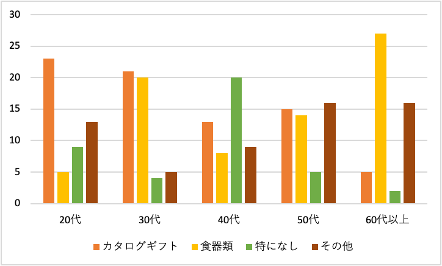
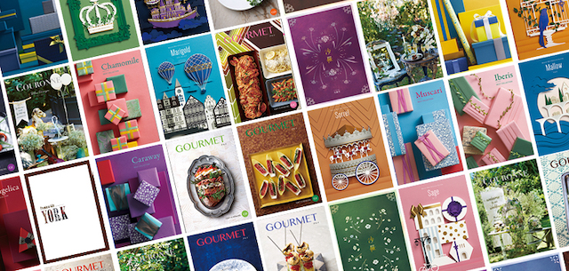

【9月ワーク】
引き出物調べ（８、９月下旬）
合宿での因子分析にて、男性と女性、年齢層によって、
結婚に求めるものが全く異なっていることがわかった
「引き出物」の歴史や由来、時代によるスタイルの変化を踏まえ、同様に年齢や性別による違いを調べる
結婚式においての、新しい何かを生み出すにあたり
切っても切り離せないのが、引き出物である。
●引き出物の由来
引き出物の由来は、平安時代に宴を開いた貴族が、その成功を喜び、
宴会に招いたお客様にお土産として馬を贈ったことが始まりである
馬を贈る際、宴会を開いた家の主が、
庭に馬を「引き出して」お客様に披露したことが「引き出物」という言葉の由来だとされている
このことから、「宴会の招待客へのお土産」のことを、「引き出物」と呼ぶようになった
●引き出物の変化
室町時代・・・
「貨幣」
（当時は馬の代わりということで代馬と呼ばれていた）
↓
戦国時代・・・
「武具」
（戦に勝てるようにという願いを込めて鮭、鱈、鯉などの食材も人気に）
↓
江戸時代・・・結婚式でふるまわれるお膳の中に、
「鰹節」
を入れるようになる
（鰹節は「勝男節（かつおぶし）」という語呂合わせから、武家を中心に引き出物として用いられるようになったという話）
↓
明治時代・・・貴族だけでなく庶民にも「引き出物」文化が浸透し、一般的になる
↓
バブル景気以前・・・結婚式、披露宴で出されるお料理の一部を持ち帰る（＝引き出物）
（結婚披露の宴に出された料理の一部を折り詰めにしたものが主流。
正式には祝膳のはじめに出される「口取り肴」という勝ち栗、のしあわび、昆布の3種。普段口にすることのない贅沢な料理を持ち帰る習慣）
↓
バブル景気以降・・・食器やご当地特産品など
このあたりから、「引き出物」を招待客へのお土産として全員に同じ品を渡すことから
「頂いたお祝いに対するお返し」としてお祝いの金額や新郎新婦との関係性によって
引き出物の内容を変えるよう変化していった
↓
〜現在・・・現在では、引き出物にカタログギフトをプレゼントするのが人気となっている
食器やお菓子などでは好みもあり、他の人にあげるようなことがあるが、
カタログギフトには自分の好きな物を選べることや選ぶ時間も楽しめるメリットがあるため、人気と考えられる
●引き出物アイテム調べ
引き出物の時代による変化や由来について調べてみると、主催者が喜び「馬」を送るというところから始まり、
お土産や記念品として同一のものを送っていた昔に比べ、
現代では招待客によって金額や内容を変えるなど新郎新婦からの「お礼」や「感謝」の意味合いが
強くなり、新郎新婦の名前入り食器類や、好みの分かれる菓子類などより、
「本当にもらって嬉しい」よう自分自身で選べる「カタログギフト」が人気になっていることが
時代背景を色濃く示している
「招待される側は、どのような引き出物であると嬉しいのか」
年齢別に調べてみると以下のようなことがわかった

各年齢５０名（８月１２日〜９月３０日）
○その他の回答（年齢別）
２０代・・・デジタル周辺機器、持ち歩きが楽なもの（二次会参加のため）
３０代・・・ワインやチーズ、調味料セット
４０代・・・調理器具、アロマ系製品、ワイン
５０代・・・ワイン、写真たて、タオル
６０代以上・・・花瓶、商品券（カタログギフトはよくわからないから）

＜画像引用＞
カタログギフト
・幅広い年代でカタログギフトが人気
・５０、６０代以上には食器類が人気で、これはバブル景気前後にこの世代が引き出物として 食器類を選んでいたこと関係があると考えられる
・２０、３０代で「食器類」をもらって嬉しい人は、普段自分では買うことのないようなデザインやブランドのものを貰えることができるという声が多かった
・働く世代層では、ワインやおつまみ、調理器具など家での楽しみとなるものを求める声が多かった
今回は、「もらって嬉しい引き出物」についてのアンケートを集計し分析したが、
逆に「もらって残念だった引き出物」についてのアンケートを行ってみると面白そうだ
実際、今アンケートをお願いしている途中であるが、それをみる限り「食器類」がどの世代でも上位に入ってきている。
この二つの結果を見比べるとまた新たな発見がありそう
新しい伝統作りとして、結婚式に対する考え方や結婚披露宴においての引き出物について調べてみたが、
ここから合宿で行った因子分析での年齢世代別の結婚に関する因子と結婚式への様々な「好み」「求めるもの」、
実際に新たな伝統になりうるものについての分析と引き出物に関するアンケートを同時進行で行なっていく